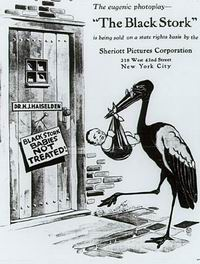

Watching Human Rights
After some coffee and chatting in the frequently overwhelmed vestibule of the Cantor auditorium (where orphanistas prove once again that they relish the opportunity the symposium affords for bumping into their admired colleagues and cohorts, literally in this case) Laura Kissel takes the podium to speak about the representation of human disability in scientific and educational films. Her work is part of an effort to rectify the small amount of attention paid to this topic. She brought no less than five clips to the screen, and began her presentation with a series of questions for audience consideration. How is the history of disability documented in orphan films? What do these films display about social attitudes of the day and the construction of normative cultural spaces? How might these films be utilized to chart the evolution of social attitudes (from eugenics to the emergence of a civil rights movement, etc) about disabled persons? The clips she brought to screen broach these questions and more.
Her first clip is a snippet from the 1916-17 film The Black Stork, directed by the Wharton brothers and produced by eugenicist Dr. Harry Haiselden who also starts (as himself) in the film. The Dr. Kevorkian of his day, Haiselden professed the right of parents to allow their disabled babies to die through the withholding of medical treatment.

The narrative of the film finds a diseased fiancé withholding the fact of his disease from his betrothed. A particularly disturbing flashforward shows the couple having their first child, which is born with an unidentified disability. A slender, wide-eyed baby flails about, alone on a cart, as his parents moan and cry in sadness (and apparent horror). The film ends with the ‘good’ doctor convincing them to allow their child to die. This clip introduces the audience to the horrors of the early culture of institutionalization that was the guiding principal of society’s care for the disabled from the 1800's through the 1960's.
Two subsequent clips further illustrate this history by showing the scientific communities’ construction and imposition of normalcy through studies of child development and the attitudes of the public toward these “shut-ins,” respectively. A down syndrome baby who cannot grasp blocks in a way that doctors define as “normal” grows into a precocious and lovely 5 year-old who is obviously proficient and willfully un-stacking the doctor’s carefully constructed towers, in spite of his admonishments. An outrageous ad for a drive-in theater beckons folks to “bring your shut-in friends” for free.
Kissel’s final two clips engage with the advocacy of rights for those with disabilities. The first, a 1978 production of the KU bureau of child research, posits that the bureaucrat responsible for legislating social responses to disability is an alien. The second is a WWI era film clip showing early efforts at vocational rehab with the “legless automobiles.”
Applause.

Jason Livingston. Photo by Rick Prelinger.
Jason Livingston, a film and video maker who confessed that he normally avoids referencing the personal in his work, took the mic next to introduce a piece that turned up in his parent’s closet. The 16mm print turned out to be part of the work of Philip Mallory Jones and the Ithaca Video Project, a 1970s era collective that provided access to portable video equipment to individuals and community groups and encouraged creative and advocacy-related uses of the medium. The two clips from this reel that Livingston screened are part of a work-in-progress on the labor of upstate media arts collectives of this period. Narrated by Irving Powless, the clips deal with protests by members of the Iroquois Nation against the state government’s reneging on the terms of a 1950's era agreement. This breach allowed interstate 80 to pass through their territory.

Onondagas vs. New York State, 1972
Clip one introduces the audience to Oren Lyons, a member of the Seneca Nation and the Iroquois Confederacy whose life is dedicated to fighting for the rights and livelihood of indigenous peoples both locally and internationally. Summing up his feelings after a long history of struggle with state and federal governments, which was characterized by the frequent and gross violations of promises and treaties, a clearly frustrated Lyons declares that he is not asking anything of the government in this current struggle. “All I want is to be left alone.” The second clip from this project strongly resembles footage from the National Film Board of Canada production You Are on Indian Land and features I-81 workers being obstructed by demonstrating Indian groups.
Livingston ended by announcing that he may have just located more footage for the project in the archive of the Visual Studies Workshop, and he looks forward to continuing this research.
Taking the stage next was Grace Lile of the Witness Media Archive (WMA) who began her discussion on the role of visual images in human rights advocacy by referencing the power wielded by the Rodney King video. The video was able to spark protest and investigative action by authorities into what would have otherwise been a forgotten episode of police brutality. What if, she asked, human rights advocates around the world could have the same access to such video production and, more importantly, a highly visible venue for injecting such images into the public arena? She argued that using video strategically to win the struggle for human rights means using it as one component of a larger campaign that has specific goals and plans. By offering a venue for this footage, Witness Media Archive sees itself as having a potentially useful role in the activist process.
She illustrated this by screening three very powerful clips dealing with the struggles of the Nakamata ancestral group in the Philippines to claim rights to their ancestral lands. The first two were segments of Seeing is Believing, a Peter Wintonick documentary about the political and social uses of handicams, that was in production while some of the political events depicted in it were still in the process of unfolding. The third clip was taken from the news coverage of The Probe Team but uses the images shot by the Nakamata on their own camera as ‘witness’ to the retaliatory murders of several of their members.

Seeing Is Believing: Handicams, Human Rights and the News, 2002
In thinking about this footage, and in deciding to post some of it on the web, Lile and others at WMA had to consider many concerns, including whether promoting this piece of technology would further jeopardize the lives of its authors. In this new era of access, with the entrance of You Tube, better cell phone video and other technologies, WMA has created a new website where footage can be uploaded in order to try to develop a model for responsibly increasing the power of human rights advocates. This can be accessed in beta version at http://hub.witness.org/en/node/33.